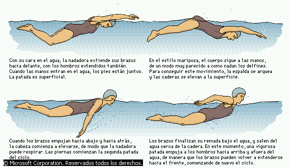
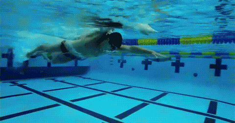
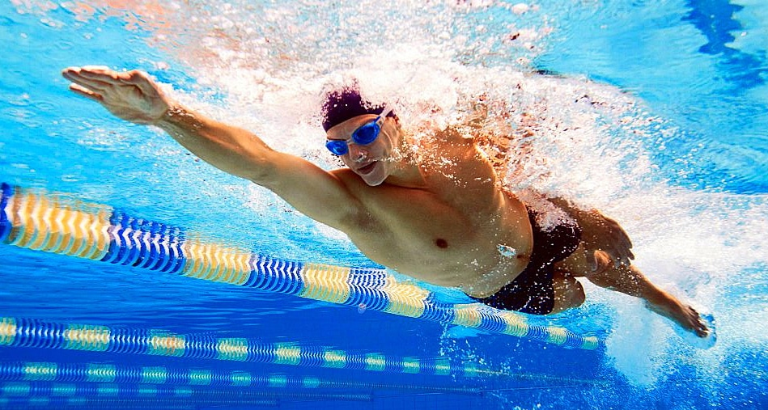

La natación se trata de un deporte además de recreativo muy beneficioso para el ser humano, ya que al ser principalmente un ejercicio aeróbico, la natación reduce los efectos dañinos del estrés, puede mejorar y corregir la postura y desarrollar un físico característico, a menudo llamada "silueta de nadador".

Aunque, ¿qué hay que hacer para ser un buen nadador?
Déjate asesorar por expertos. ...
1. Centra tu atención en aquellos aspectos técnicos determinantes de tu rendimiento en el nado.
2. No intentes corregir más de 2-3 errores técnicos a la vez.
3. Rebaja tus tiempos, no tus brazadas.
4. Acelera tu brazada.

En cualquier caso, ¿cuál es el día de los nadadores?
Justamente hoy, 12 de febrero se celebra el día del nadador. Muchas personas lo celebran a lo grande por sus marcas en las competencias de natación, otros porque disfrutan al máximo cuando están dentro de la piscina.
Sin embargo, ¿qué se necesita para ser un gran nadador?
1. Entrenamiento y planificación.
2.Visualización de objetivos.
3. Compromiso, constancia y fortaleza mental.
En el contexto de los juegos olímpicos, la natación es uno de los deportes más vistos, por la gran variedad de categorías que existen, entre modalidades individuales y de relevos como masculinas y femeninas, variando cada una de estas entre los estilos de natación antes mencionados. Definitivamente, no se puede hablar de natación sin hablar del deportista que hasta ahora es el más grande en la historia de este deporte, Michael Phelps. Desde las olimpiadas de Atenas del 2004, ha obtenido un total de 28 medallas olímpicas de las cuales 23 de ellas son medallas de oro.
Porque mejora la resistencia física, ayuda a mejorar la circulación de la sangre, fortifica la postura del cuerpo, desarrolla músculos, reduce el estrés, entre otros muchísimos beneficios hacen este deporte el más ideal. La natación es una actividad que puede ser practicada por cualquier persona, desde niños desde los 2 a 3 años de edad hasta personas de la tercera edad, y se caracteriza por ser uno de los deportes más completos que permite poner en movimiento todo el cuerpo sin causar ningún impacto en las articulaciones y músculos como otros deportes si lo hacen. Hoy en día, la natación se practica con fines recreativos, terapéuticos y competitivos e incluso hay trabajos donde se exige saber nadar bien, como los rescatistas o biólogos marinos.
